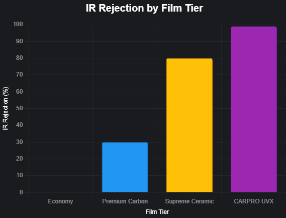

Selling Window Tint
This module covers the essential knowledge and sales techniques required to effectively sell window tint services, from understanding the technology to closing the sale.
Quick Navigation
- 1. Understanding the 'Why' Behind Tint
- 2. The Film Hierarchy: Good, Better, Best
- 3. The Power of the Heat Lamp Demo
- 4. Identifying the Ideal Customer
- 5. The Sales Process & Scripts
- 6. Applying the Sales Process to Common Objections
- 7. Overcoming Common Concerns (Quick Reference)
- 8. Packaging & Upselling Opportunities
- 9. Installation & Setting Expectations
- 10. Connecticut Tint Laws: Staying Compliant
1. Understanding the 'Why' Behind Tint
To sell tint effectively, you need to go beyond "it makes your windows dark." You're not selling a product; you're selling solutions to common problems. The key benefits are your primary selling tools.
UV Protection: The Health & Preservation Angle
Our films block >99% of UV rays. This is a powerful selling point. Frame it in terms of benefits the customer can relate to: "It's like sunscreen for your car and your family."
Educate the Client: "Did you know that UV rays are the primary cause of your car's interior fading and cracking? Our tint protects that investment. More importantly, it protects you and your passengers from skin damage on long drives."
Heat Rejection: The Comfort Angle
This is the most tangible benefit, especially in the summer. It's the difference between getting into a comfortable car versus an oven. This is where upselling to ceramic becomes easy.
Educate the Client: "The number you want to pay attention to is Infrared (IR) rejection. IR is the part of the light spectrum that you actually feel as heat. A basic film might only block 10-20% of that heat, while our top-of-the-line ceramic film blocks over 90%."
Glare Reduction & Privacy: The Safety & Security Angle
Reduced glare improves driving visibility and safety. Privacy protects valuables from prying eyes.
Educate the Client: "Tint significantly cuts down on glare from the sun during the day and from headlights at night, which reduces eye strain and makes driving safer. Plus, it adds a layer of privacy, keeping your belongings out of sight from potential thieves."
2. The Film Hierarchy: Good, Better, Best
We structure our offerings to make the choice clear for the customer. Your goal is to educate them on the value of stepping up to a better film.
TDS Film Performance Ladder
CARPRO UVX
Ultimate UV & IR blocking. The best protection available.
Supreme Ceramic
Superior heat rejection using ceramic particles. High performance.
Premium Carbon
Great color stability and good heat rejection. No signal interference.
Economy (Dyed)
Basic privacy and UV protection. Prone to fading over time.
| Feature | Economy (Dyed) | Premium Carbon | Supreme Ceramic | CARPRO UVX |
|---|---|---|---|---|
| Technology | Dye-impregnated polyester | Carbon particles (color-stable) | Ceramic nano-particles | Advanced UV filtering |
| Heat Rejection | Low (~10-20% TSER) | Good (~35-45% TSER) | Excellent (50-65%+ TSER) | Maximum |
| IR Rejection | ~0-10% | ~30-40% | ~80-90% | 99%+ |
| Color Stability | Can fade and turn purple | Will not fade | Will not fade | Will not fade |
| Clarity | Good | Excellent | Superior | Superior |
| Approx. Price (Full Vehicle) | Starting at $279 | Starting at $399 | Starting at $549 | Starting at $749 |
Infrared (IR) Rejection Comparison
IR is the primary source of heat you feel. This chart shows the dramatic performance increase with ceramic films.
3. The Power of the Heat Lamp Demo
This is your single most effective upselling tool. It moves the conversation from abstract numbers to a tangible feeling. Don't tell them the difference, let them feel it.
The 30-Second Demo That Sells:
- Engage: "Do you have a second? I'd love to show you something cool."
- Baseline: Let them feel the full heat from the lamp on their hand.
- The Step-Up: Place the Carbon film sample under the lamp. "This is our carbon film. You can feel a good difference, right?"
- The Close: Replace the Carbon with the Ceramic film. "Now, this is the ceramic. Feel that? It blocks almost all the heat. That's the difference you'll feel every day in your car."
A simple setup with the lamp and film samples is all you need.
Pro Tip:
Use a BTU meter in conjunction with the heat lamp to add a scientific, visual confirmation of what they are feeling. Seeing the numbers drop dramatically reinforces the value.
4. Identifying the Ideal Customer
Listen to your customer's needs to identify which persona they fit. This allows you to tailor your recommendation and sales pitch effectively.
The Budget Buyer
This customer prioritizes cost above all else. They are looking for a basic solution for privacy and aesthetics. While they want a good deal, they still appreciate quality installation.
Sales Approach: Acknowledge their budget and recommend Economy as a solid starting point. Explain the benefits of Premium Carbon as a small step up that offers significant long-term value (color stability) for a modest price increase.
The Comfort Seeker
This customer's primary motivation is reducing heat to make their daily commute or family trips more comfortable. They often mention how hot their car gets in the sun.
Sales Approach: This is the perfect customer for the heat lamp demo. Lead with Supreme Ceramic, emphasizing the massive jump in IR rejection. Frame CARPRO UVX as the ultimate solution for maximum comfort, especially if they spend a lot of time in their car.
The Luxury Enthusiast
This customer wants the absolute best for their high-end vehicle. They are interested in top-tier performance, the latest technology, and preserving their investment.
Sales Approach: Don't start at the bottom. Introduce CARPRO UVX as your premier offering, highlighting its superior UV and heat-blocking capabilities. The conversation should naturally lead to adding windshield tint for complete protection, creating a "total comfort and preservation package."
5. The Sales Process & Scripts
Combine your product knowledge with a structured sales process. Our approach is built on the powerful NEPQ Framework to diagnose customer needs, supported by core Sales Techniques to build trust and create value. The goal is to stop 'selling' and start 'solving'.
Simplify with Analogies
Use simple comparisons to make technical film differences easy to understand.
- Carbon vs. Ceramic: "Think of it like sunglasses. Our Carbon film is like a standard pair of sunglasses – it makes things darker and cuts glare. Our Ceramic film is like a high-end pair of polarized sunglasses – it not only makes things darker but also specifically targets and blocks the invisible heat rays, making you much more comfortable."
- TSER/IR: "Don't worry about all the numbers. Just think of TSER as the overall 'SPF rating' for your car. The higher the number, the better the total protection you're getting from the sun."
The Ideal Phone Call Flow
View Ideal Phone Script
Salesperson: "Thanks for calling The Detail Shop, this is [Your Name]. How can I help you?"
Client: "Hi, I was looking to get a quote for window tint on my Honda Civic."
[Connecting Question] Salesperson: "Excellent, Civics look great with tint. To make sure I recommend the right solution, what's the main reason you're looking to get your windows tinted today?"
Client: "It just gets so hot in the summer, and I don't like people being able to see in."
[Problem Awareness] Salesperson: "I completely understand, that summer heat can be brutal. On a scale of 1-10, how much of a priority for you is cutting down that heat versus just the privacy and looks?"
Client: "Oh, the heat is definitely the biggest thing. Probably an 8 or 9."
[Solution Awareness] Salesperson: "That tells me you'll be happiest with our Ceramic film, which is designed for maximum heat rejection. When you come in for your appointment, I can show you a quick demo with a heat lamp where you can actually feel the difference. It's pretty amazing."
Salesperson: "For a full installation with the Ceramic film, you're looking at [Price]. That comes with a lifetime warranty against any bubbling or fading."
[Committing Question] Salesperson: "It sounds like this is the right long-term solution to solve that heat problem for good. I have an opening this Friday morning at 9 AM, would that work for you to get it installed?"
NEPQ Conversation Flows for Ideal Customers
Script for "The Budget Buyer" (Phone Call)
Salesperson: "Thanks for calling about tint today. To get you the right options, what's the main goal for you - is it more for the sharp look and privacy, or are you also concerned about heat?"
Client: "Mainly for the privacy and the look. I'm not too worried about heat, just want something that looks good and isn't too expensive."
[Educate on Value] Salesperson: "Okay, perfect. We have two great options for that. Our entry-level film gives you that privacy and look. But for just a little more, our Carbon film offers a big advantage: it's guaranteed never to fade or turn purple like cheaper films can over time. It's a 'do it once, do it right' solution."
[Problem Awareness] Salesperson: "Have you ever seen an older car with that bubbly, purple tint? That's what happens with basic dyed films. Our Carbon film prevents that permanently."
[Committing Question] Salesperson: "For the small difference in price, does investing in the Carbon film to guarantee that sharp look lasts for a lifetime seem like the smarter choice for your car?"
Script for "The Comfort Seeker" (Phone Call)
Salesperson: "Thanks for calling The Detail Shop! To get started on your tint quote, what's the biggest frustration you have with your windows right now?"
Client: "My car just gets unbearably hot. The black leather seats are like a frying pan in the summer."
[Problem Awareness] Salesperson: "I know exactly what you mean. It makes even short drives miserable until the AC finally kicks in. How much of a difference would it make if your car was significantly cooler from the moment you got in?"
Client: "It would be amazing."
[Solution Awareness & Demo] Salesperson: "Then you are the perfect candidate for our ceramic film. It's a different technology designed to block infrared heat. The best way to understand is to feel it. When you drop off, I'll show you our heat lamp demo. The difference is night and day."
[Committing Question] Salesperson: "Based on solving that heat problem, our ceramic film is the right solution. Shall we go ahead and get you scheduled?"
Script for "The Luxury Enthusiast" (Phone Call)
Salesperson: "Thanks for calling about your new [Luxury Car Brand]. For a vehicle like this, our clients are typically looking for the absolute best in performance and protection. Is that what you had in mind?"
Client: "Yes, I want the best film you have."
[Solution Awareness - Top Down] Salesperson: "Perfect. Our top-of-the-line CARPRO UVX film offers the highest level of heat and UV rejection available, which is what you want for preserving this interior. It's the ultimate in protection and clarity."
[Educate & Upsell] Salesperson: "Now, since we're focused on maximum performance, we have to talk about the biggest source of heat and UV in your entire car: the windshield. We can apply a film to it that is completely clear, so it's legal and doesn't affect your vision, but it blocks 99% of UV rays and a massive amount of heat. It completes the protective bubble around the cabin."
[Committing Question] Salesperson: "Does creating that total comfort and preservation package with the windshield sound like the right approach for your new car?"
6. Applying the Sales Process to Common Objections
An objection is not a "no"—it's a request for more information. Use the "Clarify, Discuss, Diffuse" method from our Objection Handling module to turn these moments into opportunities to build more value.
Welcome Objections as Opportunities
An objection isn't a dead end; it's a sign the customer is engaged and just needs more information to feel confident. Your job is to be the expert guide who provides that clarity. A concern about price is an open door to talk about value.
Objection Playbook: Price & Cost
Scenario #1: "It costs more than I expected."
Client: "Okay, that's a bit more than I was expecting."
[Clarify] Salesperson: "I understand. And just so I'm clear, is the concern more about the total investment today, or are you wondering about the value you get for that price?"
Client: "A little of both, I guess."
[Discuss with Consequence Question] Salesperson: "That's completely fair. Let me ask you this: what's the consequence of not solving that heat problem this summer? How will that affect your daily drive or your family's comfort in the car?"
Client: "That's true, it gets unbearable. I end up blasting the AC which kills my gas mileage."
[Diffuse with Value Statement] Salesperson: "Exactly. So while it's an investment upfront, it's a permanent upgrade that solves a daily frustration for years to come. When you think about it that way, does it feel like a worthwhile solution?"
Scenario #2: "What's the best price you can give me?"
Client: "That sounds good. So what's the best price you can do for me on that?"
[Clarify] Salesperson: "That's a fair question. When you ask for the 'best price,' are you looking for the lowest possible number, or are you looking for the best overall value for a professional installation that's guaranteed to last?"
Client: "Well, the best value, I guess."
[Discuss & Educate] Salesperson: "Great, because that's what we focus on. Our pricing is set to ensure we can use premium, warrantied films and have our certified technicians do the job right the first time, without any contamination or peeling issues down the road. Our price reflects that guarantee of quality."
[Diffuse by Reframing] Salesperson: "So while we don't discount our labor, the 'best price' I can offer is the one that ensures a perfect, permanent solution to that heat problem you wanted to solve. Does that make sense?"
Objection Playbook: Stalling & Needing a Partner
Embrace the Silence
After you ask a clarifying question (like 'Which one of those is it for you?'), pause and be comfortable with the silence. This gives the customer space to think honestly about their hesitation and gives their answer more weight. Don't rush to fill the quiet.
Scenario #1: "I need to talk to my wife."
Client: "This all sounds great, but I need to check with my wife before I book anything."
[Clarify] Salesperson: "That's a great idea, it's always best to be on the same page for decisions like this. So you have all the info for that conversation, what do you think her number one question or concern is going to be?"
Client: "Probably just the cost and making sure it's worth it."
[Discuss & Educate] Salesperson: "That makes perfect sense. When you mention the cost, it might be helpful to also remind her about how hot the car gets on those long family trips and how the ceramic tint will make it much more comfortable for the kids in the back. It's less about the car and more about the family's comfort."
[Diffuse with a Soft Close] Salesperson: "How about we schedule a tentative appointment for you for next week? That way your spot is reserved. You'll have plenty of time to talk it over, and you can just give me a call to confirm or cancel. There's no obligation at all. How does that sound?"
Scenario #2: "I need to think about it."
Client: "I need to think about it a little bit."
[Clarify] Salesperson: "I totally understand. Usually when someone says they need to think about it, it's either about the price and making sure it fits the budget, or it's about making sure this is the right solution. Which one of those is it for you?"
Client: "Mainly the price."
[Discuss & Educate] Salesperson: "Okay, that's helpful. One thing to consider is that our ceramic film not only adds comfort, but by blocking so much heat, it means you'll run your A/C less, which can actually save you a bit on gas over the life of the car. It's one of the few upgrades that can pay for itself over time."
[Diffuse with Next Steps] Salesperson: "Why don't I send you a formal quote with all the details and warranty info? That way you have everything in writing. When would be a good time later this week for a quick follow-up call to see if you have any other questions?"
7. Overcoming Common Concerns (Quick Reference)
Here are quick, concise answers to other common questions you'll encounter.
Concern: "My car has factory privacy glass, isn't that the same thing?"
Response: "That's an excellent question. Factory privacy glass is just darkened glass from the manufacturer. It's great for privacy, but it does almost nothing to block heat or UV rays. To get the actual heat rejection and UV protection, you still need to apply a high-performance ceramic film over the top of it. One is for looks, the other is for performance."
Concern: "I don't want it to look like a 'limo'."
Response: "We completely agree, a tasteful look is important. You have full control over the darkness. The great thing about our ceramic film is that you don't need to go dark to get the heat rejection benefits. We have lighter shades that are almost invisible but still block over 90% of the heat, giving you all the comfort without changing the look of your car dramatically."
Concern: "What about that weird border on the rear windshield?"
Response: "You're talking about the 'dot matrix.' Those are small ceramic dots baked into the glass by the manufacturer. Because they're raised, the film can't stick perfectly flat against them, which can create a silvery or wavy appearance around the edge. This is completely normal for every tint installation on this type of glass. Our technicians are experts at getting the film to lay as flat as possible, but a visible edge in that area is unavoidable."
8. Packaging & Upselling Opportunities
A tint customer is often the perfect candidate for other services. Always think about the "next logical step" in protecting their vehicle.
The Windshield Upsell
This is the easiest and most logical upsell. The windshield is the largest source of heat in a vehicle.
"Since your main goal is heat rejection, I highly recommend we install our clear ceramic film on the windshield. It's virtually invisible, so it doesn't change your view, but it blocks an incredible amount of heat. It makes the biggest difference of all."
Bundle & Save:
Offer a slight discount for adding a windshield film to a full tint package. For example, "Normally the windshield is $XXX, but since we're doing the rest of the car, we can add it on for just $YYY."
The "Total Protection" Package
Use tint as a gateway to introduce paint protection film (PPF) and ceramic coatings.
"Now that we've got the interior protected from the sun, have you thought about protecting your paint from rock chips and scratches? While your car is here, it's a perfect time to apply PPF to the front end."
9. Installation & Setting Expectations
The Curing Process: The Most Important Post-Sale Conversation
Properly setting expectations for the curing process is critical for customer satisfaction. This conversation prevents 99% of phone calls and concerns after the installation.
What to Tell Every Customer:
- "Your new tint is held on by a thin layer of water, and it needs time to dry out, just like a painting. This is called the 'curing process'."
- "You may notice some small water pockets or a slightly hazy or cloudy look. This is completely normal and will disappear as the water evaporates through the film over the next few days."
- "The time it takes to fully cure can be a few days in hot, sunny weather, or up to a few weeks in cold, cloudy weather."
- "The most important thing is not to roll down your windows for at least 3 to 5 days. We'll place reminders on your window switches."
- "Please also avoid cleaning the inside of the windows for about a week to ensure the film's adhesive bonds properly."
Being proactive with this information builds trust and shows our expertise. It assures the customer that we are a professional shop that stands behind its work.
10. Connecticut Tint Laws: Staying Compliant
We must inform every customer of the state laws. This protects them and the shop. Medical exemptions are the only exception to these rules.
- Windshield: Non-reflective tint is allowed on the top 4 inches (AS-1 Line).
- Front Side Windows: Must allow more than 35% of light in.
- Back Side & Rear Windows: Any darkness can be used.
- Reflectivity: No more than 21% reflective.